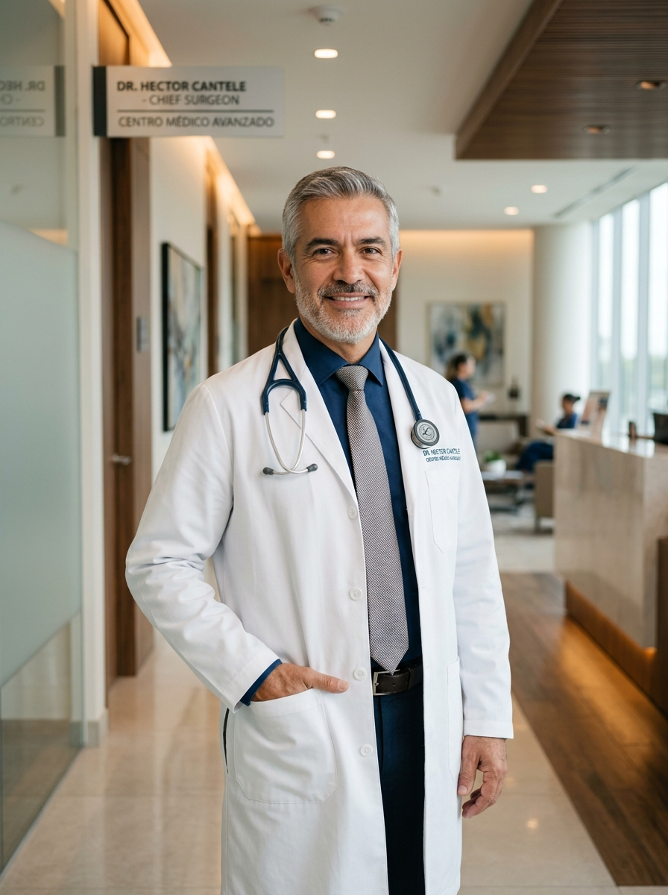

Colecistectomía Laparoscópica
Extracción segura de la vesícula biliar por litiasis (cálculos) o inflamación aguda mediante 3-4 microincisiones milimétricas.
- Mínimo dolor postoperatorio
- Alta hospitalaria en 24 horas
- Excelente resultado estético
Dr. Héctor Eduardo Cantele Prieto. Jefe del Servicio de Cirugía IV del Hospital Universitario de Caracas y Profesor de la UCV. Procedimientos laparoscópicos de vanguardia en la Clínica Santa Sofía con microincisiones, menos dolor y recuperación en 24 horas.
Trayectoria Docente UCV
Cirugías Laparoscópicas
Alta Hospitalaria Promedio

Hospital Universitario de Caracas (HUC)
Técnicas laparoscópicas avanzadas diseñadas para resolver patologías complejas con la mínima agresión anatómica y el más rápido retorno a su vida activa.
Extracción segura de la vesícula biliar por litiasis (cálculos) o inflamación aguda mediante 3-4 microincisiones milimétricas.
Reparación laparoscópica de hernias inguinales, umbilicales y eventraciones con colocación de mallas anatómicas de última generación.
Manga Gástrica y Bypass Gástrico en Y de Roux para el control definitivo del sobrepeso, diabetes tipo 2 e hipertensión.
Funduplicatura laparoscópica para pacientes con reflujo gastroesofágico crónico, acidez refractaria o esofagitis severa.
El Dr. Héctor Cantele aplica protocolos de optimización perioperatoria ERAS (Enhanced Recovery After Surgery) que reducen el estrés quirúrgico, minimizan la necesidad de analgésicos fuertes y aceleran la reincorporación del paciente a sus actividades habituales.
Solicitar Evaluación PreoperatoriaEstudios prequirúrgicos completos y planificación anatómica milimétrica para asegurar que la indicación quirúrgica sea certera y personalizada.
Instrumental de alta definición 4K y técnicas que preservan tejidos sanos, reduciendo drásticamente el sangrado y el riesgo de infecciones.
Evaluación directa y seguimiento postoperatorio continuo por el propio Dr. Cantele y su equipo consolidado de anestesiología y enfermería.
Instalaciones de primer nivel equipadas con la más alta tecnología diagnóstica y hospitalaria del país.
Urb. El Cafetal, Av. Principal de Santa Sofía, Caracas, Miranda.
Área de Quirófanos y Hospitalización de Alta Complejidad.
Torre Centro, Piso 17, Oficina 173.
Avenida Sucre, Los Dos Caminos, Caracas.
Evaluación Médica y Control Postoperatorio.
Respuestas claras y fundamentadas sobre procedimientos, preparación y recuperación quirúrgica.